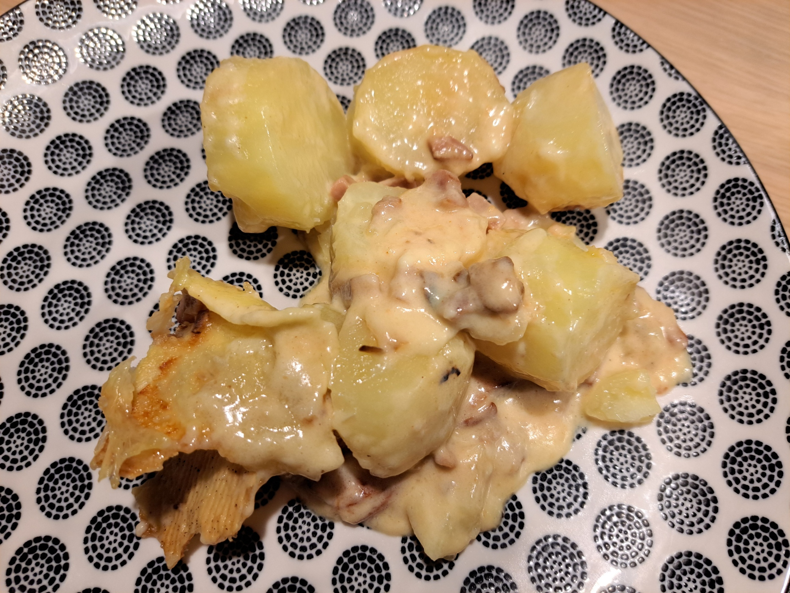

Tartiflette

Instructions
Cook the Potatoes
Peel the potatoes and cut them into thick slices (about 1/4 inch). Boil in salted water for 10-12 minutes until just tender but not falling apart. They should still have some firmness. Drain and set aside.
Prepare the Bacon and Onions
In a large skillet, cook the bacon or lardons over medium heat until crispy, about 5-7 minutes. Remove and set aside. In the same pan with the bacon fat, add butter and sauté the sliced onions until soft and golden, about 8-10 minutes. Add minced garlic and cook for 1 minute more. Season with salt, pepper, and fresh thyme.
Deglaze and Combine
Pour the white wine into the skillet with the onions and let it simmer for 2-3 minutes to reduce slightly. Add the cooked potatoes and bacon back to the pan. Gently toss to combine. Pour in the heavy cream and stir carefully to coat everything evenly.
Assemble and Bake
Preheat oven to 375°F (190°C). Transfer the potato mixture to a large baking dish. Cut the Reblochon cheese in half horizontally to create two rounds. Place the cheese halves on top of the potatoes, rind-side up. Bake for 25-30 minutes until the cheese is melted and bubbly and the top is golden brown. Let rest for 5 minutes, garnish with fresh parsley, and serve hot with a green salad and crusty bread.